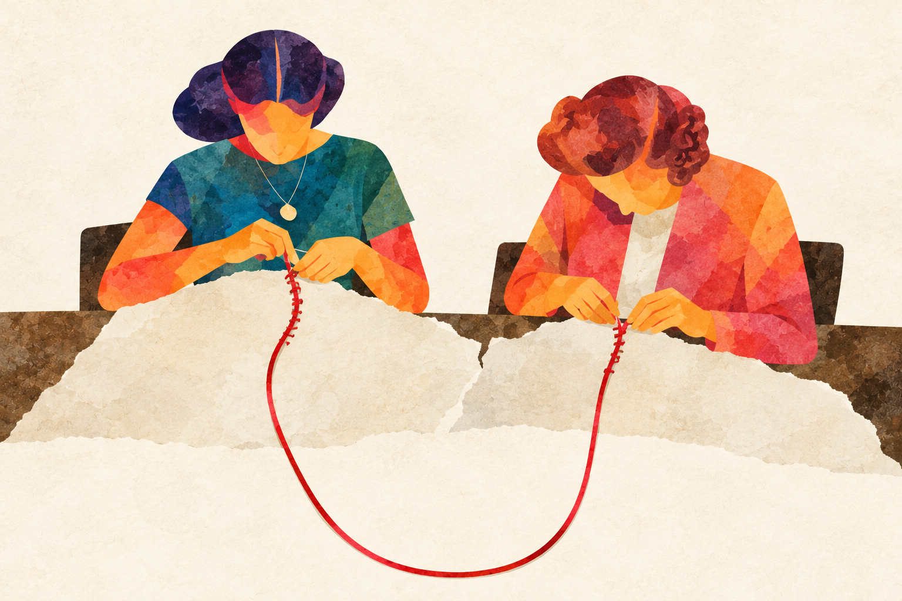
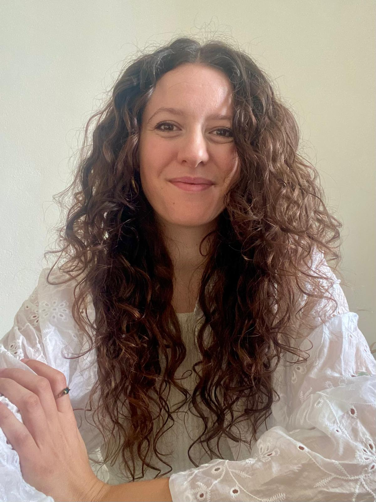

Dott.ssa Valentina Allieri
Psicologa clinica ad orientamento sistemico-relazionale.
Il profilo →Psicologhe a Roncello e online
Accogliamo adulti, adolescenti, coppie e famiglie nei momenti in cui qualcosa chiede di essere ascoltato e compreso.
Allieri & Pagliari
Lavoriamo in dialogo, unendo esperienze e sensibilità diverse. Ciascuna conserva il proprio percorso, per offrire uno spazio di ascolto costruito intorno alla persona.
Conosciamoci meglio →
Il nostro modo di lavorare
Il nostro approccio sistemico-relazionale considera la persona nelle sue relazioni, nelle esperienze vissute e nei contesti che attraversa.
Insieme, diamo significato a ciò che sta accadendo e riconosciamo risorse e possibilità di cambiamento.
Come si svolge il primo incontro →Possiamo lavorare insieme su
Chi siamo
Psicologa clinica ad orientamento sistemico-relazionale.
Il profilo →
Psicologa clinica ad orientamento sistemico-relazionale, con attenzione a identità, appartenenza e background migratorio.
Il profilo →Prendiamo contatto
Se non sai a chi rivolgerti, raccontaci la tua storia: troveremo insieme il primo passo più adatto.
Riceviamo a Roncello
e anche online.